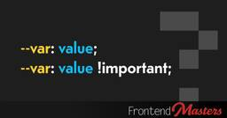

Frontend Masters Boost RSS Feed
https://frontendmasters.com/blog
Frontend Masters Boost is a blog about web development. It's written by the team at Frontend Masters, course instructors from the industry, and curated guest authors. The goal is to help you on your path to becoming a senior developer, or to be an even better one.
フィード
A first look at the Web Install API
Frontend Masters Boost RSS Feed
Bruce Lawson: I was excited to see that the proposed new Web Install API has entered Origin Trial in Chromium. It kind of works in Chromium Canary, but is most complete in Microsoft Edge beta […] The reason I was excited is because I read the Web install API explainer when it was announced a few months ago: The […]
2日前

!important and CSS Custom Properties
Frontend Masters Boost RSS Feed
The `!important` part doesn't become part of the value, the whole declaration is treated as !important;
3日前
Preserve State While Moving Elements in the DOM
Frontend Masters Boost RSS Feed
Bramus wrote this almost a year ago, but I’d still call it a relatively new feature of JavaScript and one very worth knowing about. With Node.prototype.moveBefore you can move elements around a DOM tree, without resetting the element’s state. You don’t need it to maintain event listeners, but, as Bramus notes, it’ll keep an iframe loaded, animations […]
3日前
How I Write Custom Elements with lit-html
Frontend Masters Boost RSS Feed
You can use a smaller part of Lit to build web web components that still take advantage of some of it's best features, particularly if you're cool with Light DOM.
6日前

Toggle `position: sticky` to `position: fixed` on Scroll
Frontend Masters Boost RSS Feed
Fixed and sticky positioning behave very differently, but we can switch between the two at exact points for some unusual looking effects.
11日前
Exploring Multi-Brand Systems with Tokens and Composability
Frontend Masters Boost RSS Feed
Exploring a Card component made hyper flexible though use of easily changeable custom properties, props, and slots.
16日前
Liquid Glass in the Browser
Frontend Masters Boost RSS Feed
There was a quick surge of people re-creating liquid glass in the browser shortly after Apple’s debut of the aesthetic. Now that it’s settled in a bit, there have been some slower more detailed studies.
17日前
Different Page Transitions For Different Circumstances
Frontend Masters Boost RSS Feed
In JavaScript, you can detect a view transition happening, set a type, and have CSS do unique things based on that type.
18日前
Default parameters: your code just got smarter
Frontend Masters Boost RSS Feed
Matt Smith with wonderfully straightforward writing on why default parameters for functions are a good idea. I like the tip where you can still do it with an object-style param.
23日前
Thoughts on Native CSS Mixins
Frontend Masters Boost RSS Feed
There are no browser implementations of mixins yet, nor a fleshed out spec. So perhaps now is the best time to try to understand and opine.
23日前